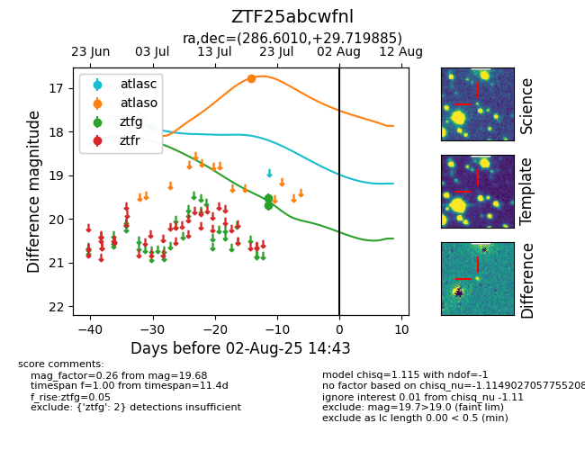

Target ZTF25abcwfnl at 2025-08-02 14:43, see:
FINK: fink-portal.org/ZTF25abcwfnl
Lasair: lasair-ztf.lsst.ac.uk/objects/ZTF25abcwfnl
ALeRCE: alerce.online/object/ZTF25abcwfnl
alt names
ZTF25abcwfnl (ztf,fink)
coordinates:
equatorial (ra, dec) = (286.6010,+29.71988)
galactic (l, b) = (61.2546,+10.11479)
photometry
last atlasc=17.92, atlaso=16.77, ztfg=19.68
1 atlasc, 1 atlaso, 2 ztfg detections
